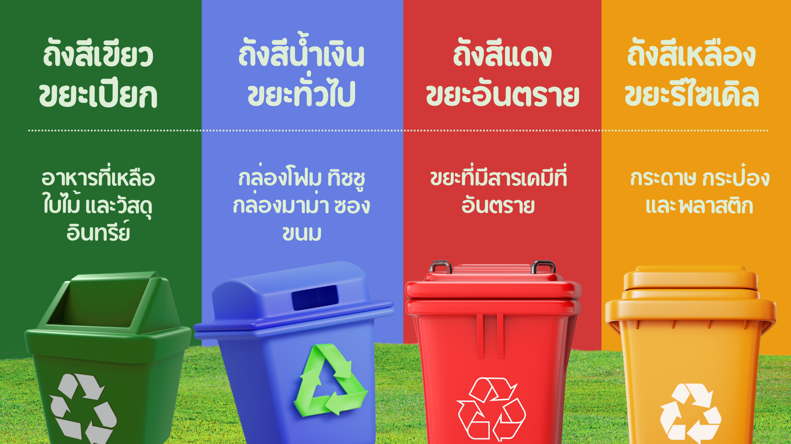

รู้จักขยะแต่ละประเภท เพื่อการแยกที่ถูกต้อง

ขยะที่เกิดจากสิ่งมีชีวิต สามารถย่อยสลายได้เอง และสามารถนำไปทำปุ๋ยหมักเพื่อใช้เลี้ยงพืชได้


ข้อควรระวัง: แยกออกจากขยะประเภทอื่นเพื่อป้องกันกลิ่นและแมลง ไม่ควรรอนานเกินไปก่อนทิ้ง
ขยะที่ไม่สามารถรีไซเคิลได้ หรือไม่คุ้มค่าที่จะแปรรูป ขยะประเภทนี้มักจะถูกนำไปฝังกลบหรือเผา


ขยะที่มีสารอันตรายหรือเป็นพิษ ต้องกำจัดอย่างถูกวิธี ห้ามทิ้งปะปนกับขยะทั่วไปเด็ดขาด เพราะอาจก่อให้เกิดอันตรายต่อสิ่งแวดล้อมและสุขภาพ
มีสารเคมีอันตราย นำไปทิ้งที่จุดรับแบตเตอรี่ตามห้างสรรพสินค้า
หลอดฟลูออเรสเซนต์มีปรอท ต้องกำจัดแยก
น้ำยาทำความสะอาด ยาฆ่าแมลง สีทาบ้าน
นำไปคืนที่โรงพยาบาลหรือร้านขายยา
ขยะที่สามารถนำกลับไปแปรรูปเป็นวัตถุดิบใหม่ได้ การแยกขยะประเภทนี้จะช่วยประหยัดทรัพยากรธรรมชาติและพลังงานมาก
ตัวอย่าง: ขวดน้ำ ขวดนม ถุงพลาสติกสะอาด กล่องโฟม
วิธีทิ้ง: ล้างให้สะอาด บีบให้แบน เพื่อประหยัดพื้นที่
ตัวอย่าง: กระดาษถนอม หนังสือพิมพ์ กล่องกระดาษ
วิธีทิ้ง: พับเก็บให้เรียบร้อย หลีกเลี่ยงกระดาษเปียกน้ำ
ตัวอย่าง: กระป๋องน้ำอัดลม ฝาขวด เศษเหล็ก
วิธีทิ้ง: ล้างให้สะอาด บีบให้แบน
ตัวอย่าง: ขวดแก้ว ไห กระจก
วิธีทิ้ง: ห่อให้ดีเพื่อความปลอดภัย แยกตามสี